Empire Stone × Empire Granite — QA
Golden Path — FG (A: Countertop · B: Custom FG เจดีย์บัว)
เรื่องราวของ FG 2 ประเภทในเอกสารเดียว — A Countertop (ท็อปครัวคิดเป็น ตร.ม. ตัดจาก Slab): ใบสั่งขายพร้อมรายชิ้นและงานแปรรูป → ใบสั่งผลิต → เศษกลับเข้าสต็อก → ส่งของ → ใบแจ้งหนี้ · B Custom FG (เจดีย์บัวประกอบจากหินหลายชนิด): โหลดสูตรจาก BOQ → Confirm ได้ใบสั่งผลิตครบ → ตัดหิน → ประกอบได้ Serial 1 ตัวต่อชิ้น → ส่งของ → ใบแจ้งหนี้ — FG ทั้งสองประเภทลงโซน Stone FG · ทุกขั้นรันจริงผ่านหน้าจอบน eg-tst 6 ต.ค. 2026 พร้อมภาพจริง
32Test Case ทั้งหมด
7หมวด
30High Priority
2Medium Priority
0Low Priority
A1. ใบสั่งขาย Countertop (ท็อปครัว)
A · FG มาตรฐาน — เปิดใบสั่งขาย → ใส่รายการชิ้นงานและงานแปรรูป → ตรวจราคา → Confirm · 5 test cases
| TC ID | Scenario | Precondition | Steps | ข้อมูลตัวอย่าง | Expected Result | Priority | ภาพหน้าจอ |
|---|---|---|---|---|---|---|---|
| TC-GP-FG-01 | สร้างใบสั่งขาย แล้วเลือกสินค้า Countertop Countertop คิดเป็นตารางเมตร (m²) ตามชิ้นงานที่ลูกค้าสั่ง ไม่ใช่เป็นแผ่น — ตอนเลือกสินค้า จำนวนจะขึ้น 1.00 m² ไว้ก่อน แล้วถูกแทนที่ด้วยพื้นที่รวมของชิ้นงานในขั้นถัดไป |
มีลูกค้า (A-test-customer) และสินค้า Countertop ที่ผูกกับวัสดุแล้ว (GP Block Marble ราคา 12,000 ต่อ m²) |
|
Customer = A-test-customer · Product = GP Block Marble | ใบเสนอราคาใหม่ (ตัวอย่างจริง S00193) มีบรรทัดสินค้า GP Block Marble หน่วย m² ราคา 12,000.00 ต่อหน่วย และมีไอคอนรายการชิ้นงานบนบรรทัด | High | 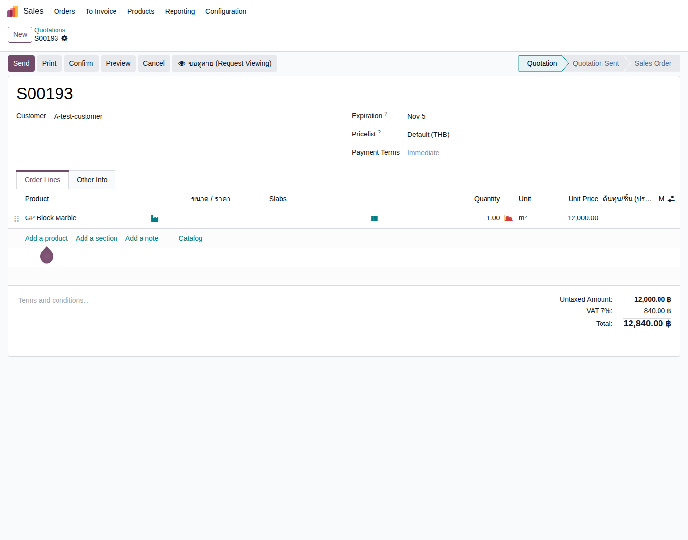 |
| TC-GP-FG-02 | ใส่รายการชิ้นงาน (กว้าง × ยาว ของแต่ละชิ้น) | ทำ TC-GP-FG-01 เสร็จแล้ว และกด Save แล้ว |
|
A ท็อปครัว 2.40 × 0.65 · B เกาะกลาง 1.20 × 0.60 · C ท็อปอ่างล้างจาน 2.00 × 0.60 (ชิ้นละ 1) | ตารางรายชิ้นแสดง 3 ชิ้น พื้นที่ 1.56 + 0.72 + 1.20 = 3.48 ตร.ม. และจำนวนในใบสั่งขายเปลี่ยนเป็น 3.48 m² ตามพื้นที่จริงอัตโนมัติ | High | 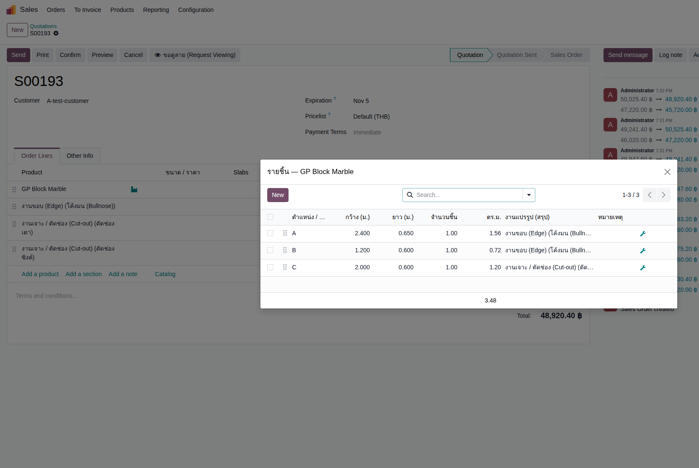 |
| TC-GP-FG-03 | เพิ่มงานแปรรูป (ขอบ / เจาะช่อง) ให้แต่ละชิ้น | ทำ TC-GP-FG-02 เสร็จแล้ว |
|
A: ขอบโค้งมนด้านกว้าง 1 (2.40 ม.) + ตัดช่องเตา · B: ขอบโค้งมนด้านกว้าง 1 (1.20 ม.) · C: ตัดช่องซิงค์ | ระบบคำนวณความยาวขอบให้เองจากด้านที่ติ๊ก (A = 2.400, B = 1.200) และงานเจาะนับเป็นจุด (1.000) — ราคาตามชนิดงานแต่ละแบบ | High | 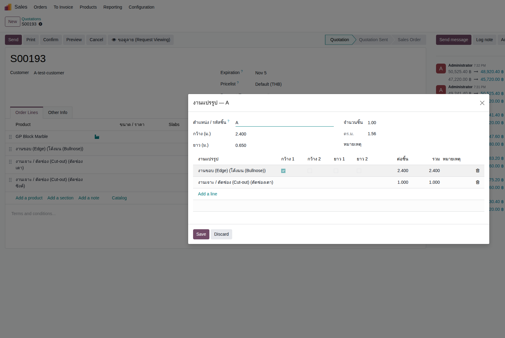 |
| TC-GP-FG-04 | ตรวจใบเสนอราคา — งานแปรรูปกลายเป็นบรรทัดบริการให้เอง | ทำ TC-GP-FG-03 เสร็จแล้ว |
|
- | ใต้บรรทัดหิน 3.48 m² = 41,760.00 มีบรรทัดบริการเพิ่มให้เอง: งานขอบ โค้งมน 3.60 ม. @ 350 = 1,260.00 · งานเจาะ (ช่องเตา) 1 จุด = 1,500.00 · งานเจาะ (ช่องซิงค์) 1 จุด = 1,200.00 — รวมก่อน VAT 45,720.00 + VAT 7% = 48,920.40 บาท | High | 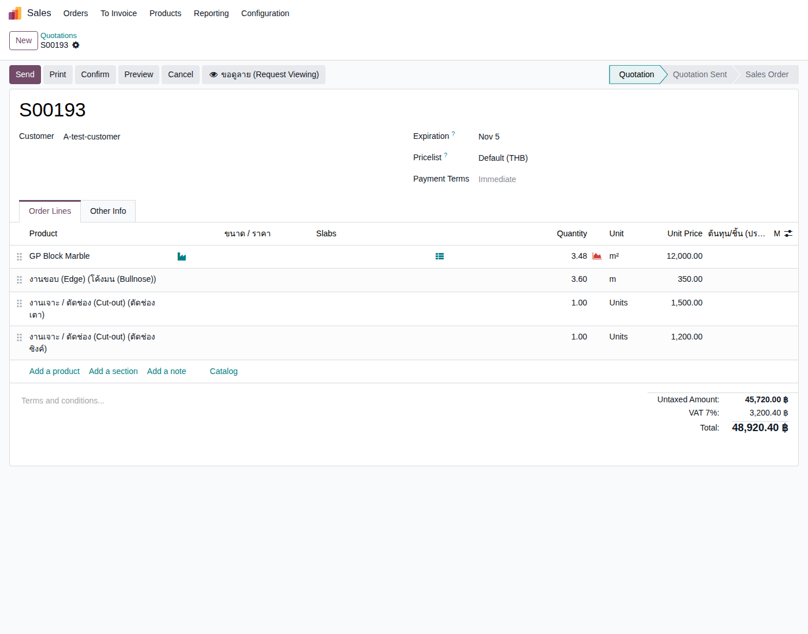 |
| TC-GP-FG-05 | กด Confirm ยืนยันใบสั่งขาย | ทำ TC-GP-FG-04 เสร็จแล้ว |
|
- | ใบเสนอราคาเปลี่ยนเป็น Sales Order · มีสมาร์ทปุ่มใหม่ "Delivery 1" และ "FG Production 1" ที่ด้านบน (ระบบสร้างใบสั่งผลิตฉบับร่างให้เองทันที) | High | 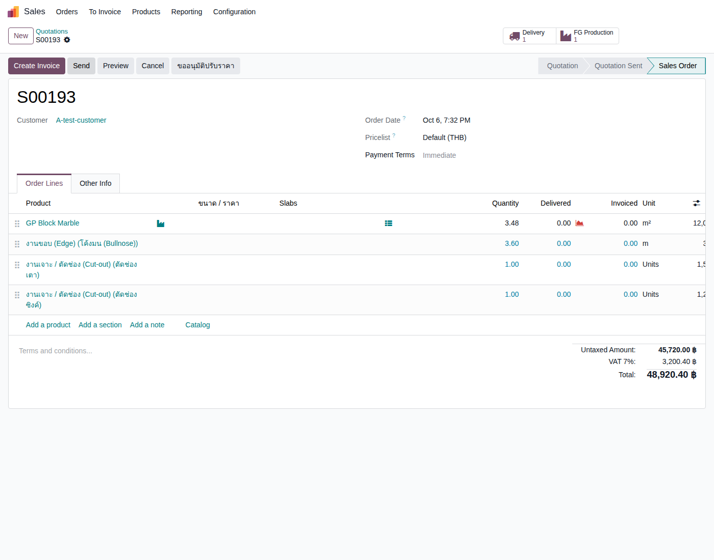 |
A2. ผลิต Countertop (FG Production)
A · เปิดใบสั่งผลิต → ระบบเลือก Slab ให้ → ย้ายไปสถานีผลิต → Confirm → บันทึกชิ้นที่ตัดได้ + เศษ → Complete · 6 test cases
| TC ID | Scenario | Precondition | Steps | ข้อมูลตัวอย่าง | Expected Result | Priority | ภาพหน้าจอ |
|---|---|---|---|---|---|---|---|
| TC-GP-FG-06 | เปิดใบสั่งผลิต FG — ระบบเลือก Slab ให้ครบพื้นที่ | ทำ TC-GP-FG-05 เสร็จแล้ว |
|
- | ใบสั่งผลิต EG01/STFG/00046 (Draft) — พื้นที่งาน 3.48 ตร.ม. · ต้องใช้รวมเผื่อเสีย 3.83 ตร.ม. (เผื่อเสีย 10%) · ระบบเลือก Slab ให้เอง 2 แผ่น (BLK-26-0006-9 และ -10 แผ่นละ 3.75 ตร.ม.) รวม 7.50 ตร.ม. พอสำหรับงาน · มีกล่องข้อความอธิบายว่าจำนวนในแท็บ Components ตอนนี้เป็นค่าตั้งต้นจากสูตร จะตรงกับ Slab ที่เลือกหลัง Confirm | High | 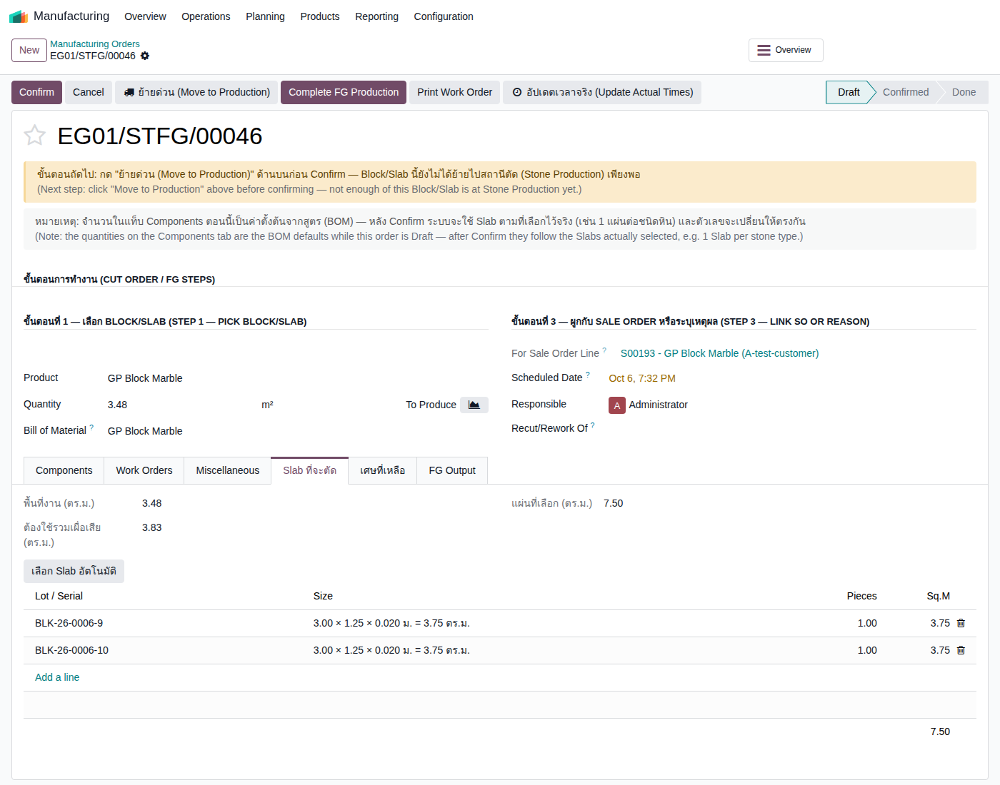 |
| TC-GP-FG-07 | ย้าย Slab ไปสถานีผลิต (ย้ายด่วน) | ทำ TC-GP-FG-06 เสร็จแล้ว |
|
- | ระบบแจ้งเตือนสีเขียว "ย้ายสำเร็จ ย้าย 2 lot ไป Stone Production แล้ว — กด Confirm ได้เลย" (Slab ทั้ง 2 แผ่นออกจาก Stone Available มาอยู่สถานีผลิต) | High | 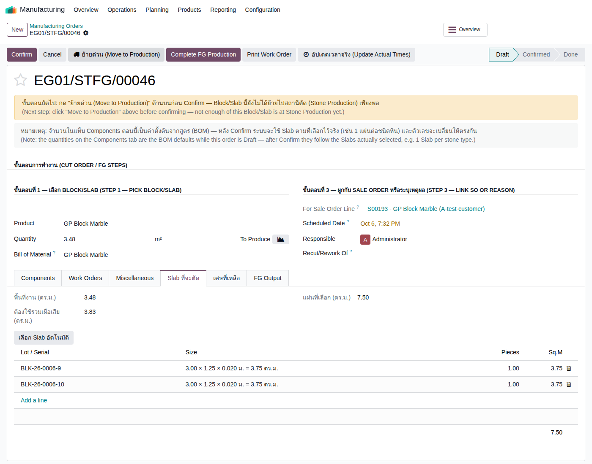 |
| TC-GP-FG-08 | กด Confirm ใบสั่งผลิต แท็บ Work Orders มี 4 ขั้นตอน (ตัดตามแบบ → ทำขอบ → เจาะ/ตัดช่อง → ตรวจก่อนส่ง) แต่ไม่ต้องกด Start ทีละขั้นก็ปิดงานได้ ในชุดนี้ข้ามส่วนจับเวลา — ขั้นตอนเหล่านี้ไม่ได้ทดสอบ · ต้อง Confirm ก่อนจึงกด Complete ได้ (ถ้ายังเป็น Draft ระบบจะไม่ให้ปิดงาน) |
ทำ TC-GP-FG-07 เสร็จแล้ว |
|
- | ใบสั่งผลิตเป็น Confirmed · ข้อความนำทางสีฟ้าบอกขั้นถัดไป (กรอก FG Output แล้วกด Complete FG Production) · จำนวนแผ่นในแท็บ Components ตรงกับ Slab ที่เลือกจริง | High | 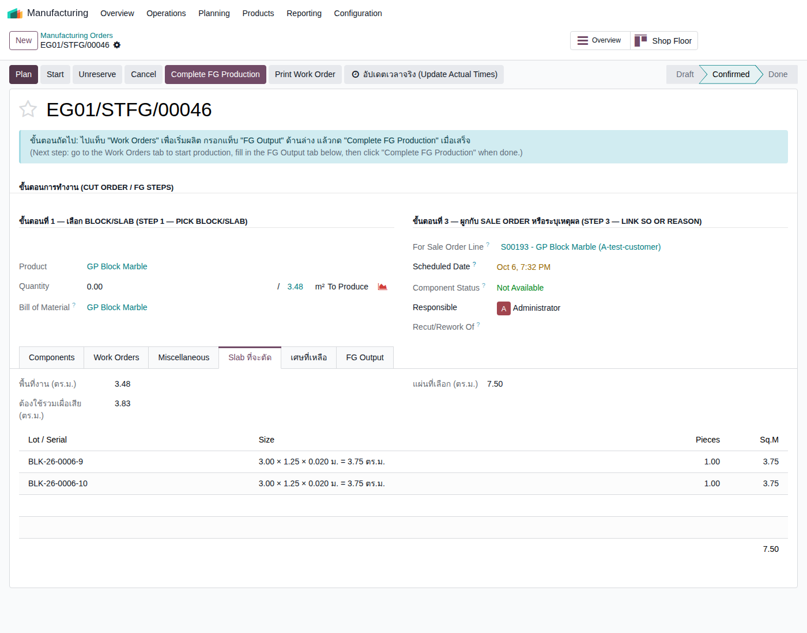 |
| TC-GP-FG-09 | ตรวจรายการชิ้นที่ตัดได้จริง (FG Output) รายการนี้ถูกเติมให้จากชิ้นงานในใบสั่งขาย โรงงานแก้เฉพาะชิ้นที่ตัดออกมาไม่ตรง และความหนา 0.00 ไม่ต้องกรอก — ระบบใช้ความหนาของ Slab ที่ตัด (0.02 ม.) ให้เอง |
ทำ TC-GP-FG-08 เสร็จแล้ว |
|
ตัดได้ตรงตามสั่ง จึงไม่ต้องแก้ | มี 3 แถวตรงกับชิ้น A (2.40 × 0.65), B (1.20 × 0.60), C (2.00 × 0.60) พร้อมหมายเหตุงานแปรรูปของแต่ละชิ้น (เช่น งานขอบ × 2.4, ช่องเตา × 1) ให้ช่างอ่านตอนตัด | High | 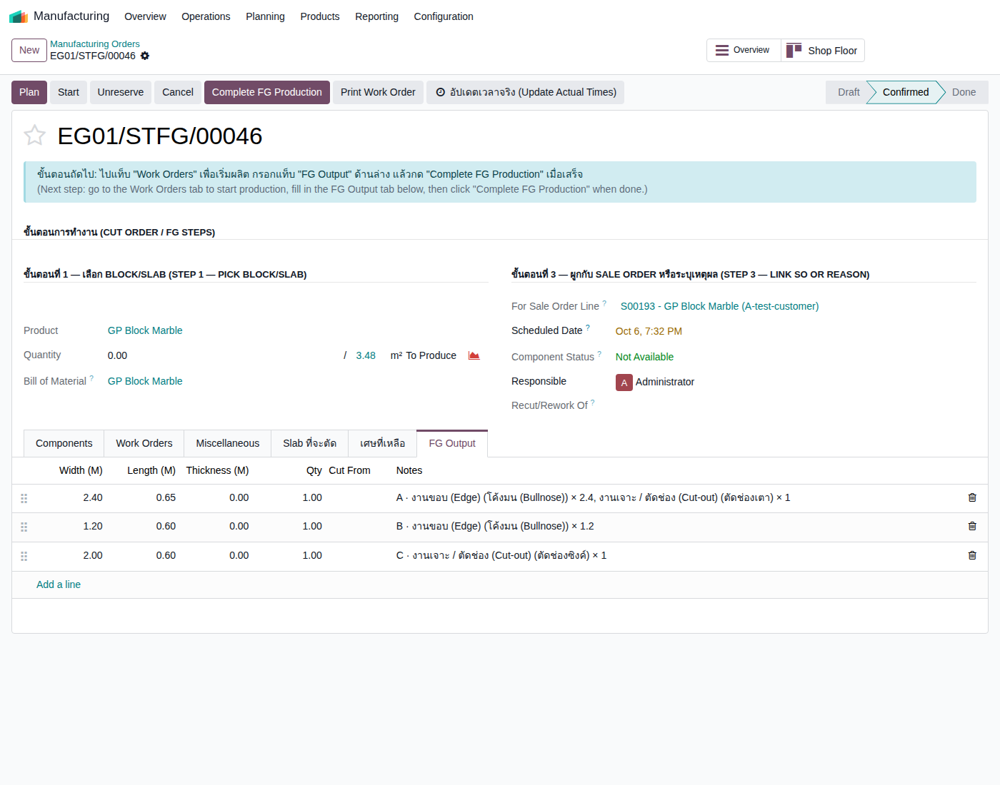 |
| TC-GP-FG-10 | บันทึกเศษหินที่เหลือจากการตัด | ทำ TC-GP-FG-09 เสร็จแล้ว |
|
เศษจาก -10: 1.20 × 1.20 (1 ชิ้น) · เศษจาก -9: 2.00 × 1.25 (1 ชิ้น) | ตารางเศษแสดง 2 แถว พื้นที่ 1.44 และ 2.50 ตร.ม. รวม 3.94 ตร.ม. — คอลัมน์ต้นทุนยังเป็น 0.00 จนกว่าจะปิดงาน | Medium | 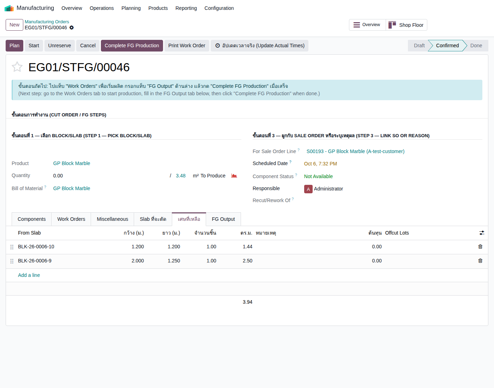 |
| TC-GP-FG-11 | กด Complete FG Production ปิดงานผลิต | ทำ TC-GP-FG-10 เสร็จแล้ว |
|
- | แจ้งเตือนสีเขียว "Complete FG Production สำเร็จ EG01/STFG/00046 ผลิตสำเร็จ 3.48 หน่วย" · ใบสั่งผลิตขึ้น Done · ได้ FG 3 Lot ตามขนาดชิ้น (FG-EG01/STFG/00046-01 ถึง -03) เข้าโซน EG01/Stock/Stone FG และต้นทุนวัสดุ 1,153.44 บาท (331.45 ต่อ m²) = ค่า Slab 2,430.00 หักส่วนของเศษ 1,276.56 · เศษได้ Lot ของตัวเอง (OC-EG01/STFG/00046-01 ต้นทุน 466.56, -02 ต้นทุน 810.00) | High | 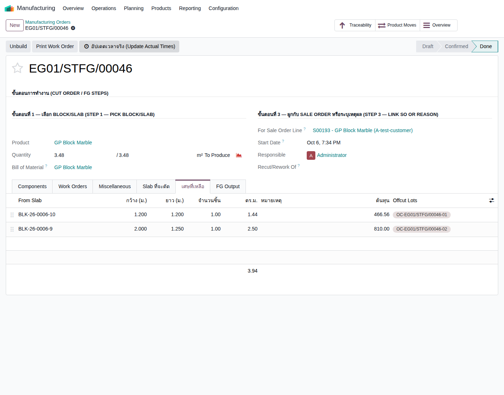 |
A3. เศษหินกลับเข้าสต็อก
A · เศษที่เหลือกลายเป็น Lot ใหม่รอตรวจ → ตรวจแล้วนำกลับไปขาย · 2 test cases
| TC ID | Scenario | Precondition | Steps | ข้อมูลตัวอย่าง | Expected Result | Priority | ภาพหน้าจอ |
|---|---|---|---|---|---|---|---|
| TC-GP-FG-12 | ตรวจว่าเศษถูกบันทึกเป็น Lot ใหม่ในสถานะ "รอตรวจ" | ทำ TC-GP-FG-11 เสร็จแล้ว |
|
OC-EG01/STFG/00046-01 | เศษแต่ละก้อนเป็น Lot ของตัวเอง ขนาดจริง (1.20 × 1.20 × 0.02 ม. = 1.44 ตร.ม.) · Status "Returned - Pending Inspection" · ต้นทุน 466.56 บาท (ส่วนแบ่งตามพื้นที่) — ก้อนที่ 2 (2.00 × 1.25) ต้นทุน 810.00 บาท | High | 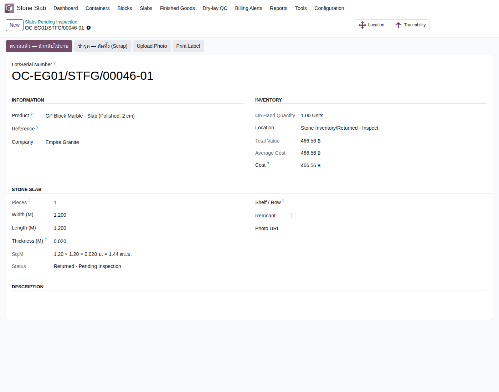 |
| TC-GP-FG-13 | ตรวจเศษแล้วนำกลับไปขายได้ ถ้าเศษแตกหรือใช้ไม่ได้ ให้กด "ชำรุด — ตัดทิ้ง (Scrap)" แทน (ไม่ได้ทดสอบในชุดนี้ เพราะนอก Happy Path) |
ทำ TC-GP-FG-12 เสร็จแล้ว |
|
OC-EG01/STFG/00046-01 และ -02 | สถานะเปลี่ยนเป็น Available · กลับไปอยู่ Stone Available · ปุ่มตรวจแล้ว/ชำรุดหายไป · ต้นทุนยังเป็น 466.56 และ 810.00 บาทเท่าเดิม — เศษกลับมาขายเป็น Slab ขนาดเล็กได้ | Medium | 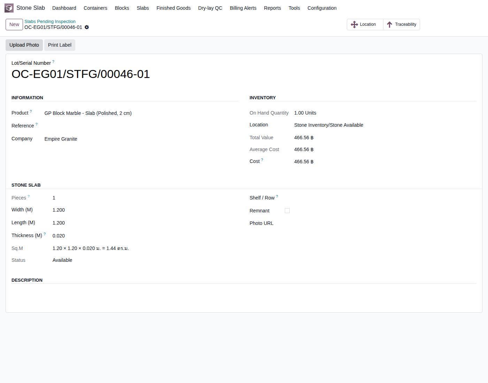 |
A4. ส่งของ เก็บเงิน และตรวจต้นทุน Countertop
A · ใบส่งของ → Validate → ใบแจ้งหนี้ → Post → ตรวจค่าแรง/ต้นทุนรวม · 5 test cases
| TC ID | Scenario | Precondition | Steps | ข้อมูลตัวอย่าง | Expected Result | Priority | ภาพหน้าจอ |
|---|---|---|---|---|---|---|---|
| TC-GP-FG-14 | เปิดใบส่งของ ตรวจว่าระบบจอง FG ถูก Lot | ทำ TC-GP-FG-11 เสร็จแล้ว |
|
- | ใบส่งของ EG01/OUT/00076 · Detailed Operations ระบุ Lot ครบ 3 แถวจากโซน EG01/Stock/Stone FG: FG-EG01/STFG/00046-01 (1.56 m²), -02 (0.72 m²), -03 (1.20 m²) รวม 3.48 m² ตรงกับที่สั่ง — ไม่ต้องสแกนหรือเลือก Lot เอง | High | 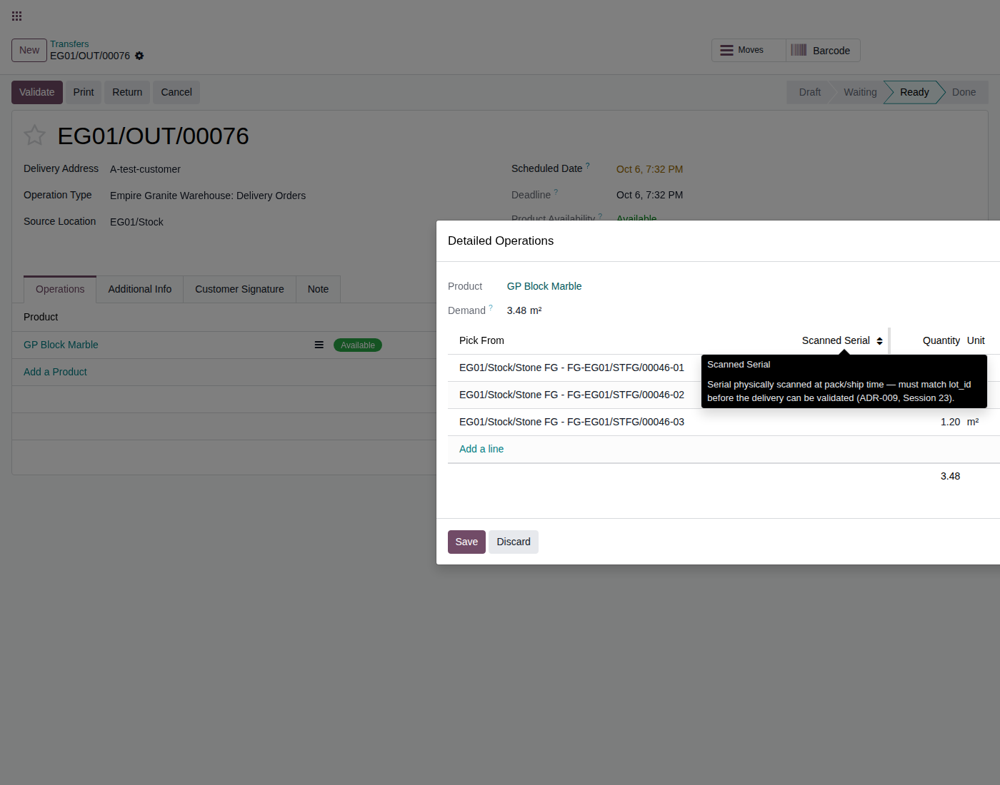 |
| TC-GP-FG-15 | กด Validate ส่งของ | ทำ TC-GP-FG-14 เสร็จแล้ว |
|
- | ใบส่งของขึ้น Done · Quantity 3.48 จาก Demand 3.48 · มี Effective Date · ปุ่ม Traceability ปรากฏ (ย้อนดูได้ว่าสินค้ามาจาก Slab แผ่นไหน) | High | 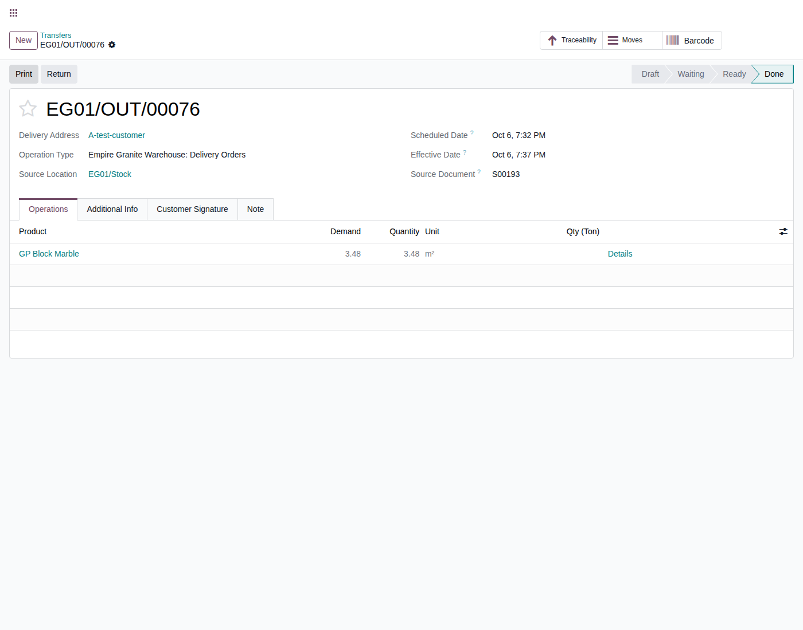 |
| TC-GP-FG-16 | สร้างใบแจ้งหนี้จาก Sales Order | ทำ TC-GP-FG-15 เสร็จแล้ว |
|
Regular invoice | ได้ใบแจ้งหนี้ฉบับร่าง 4 บรรทัดตรงกับ Sales Order: GP Block Marble 3.48 m² = 41,760.00 · งานขอบ 3.60 ม. = 1,260.00 · งานเจาะช่องเตา 1,500.00 · งานเจาะช่องซิงค์ 1,200.00 — รวม 45,720.00 + VAT 3,200.40 = 48,920.40 บาท | High | 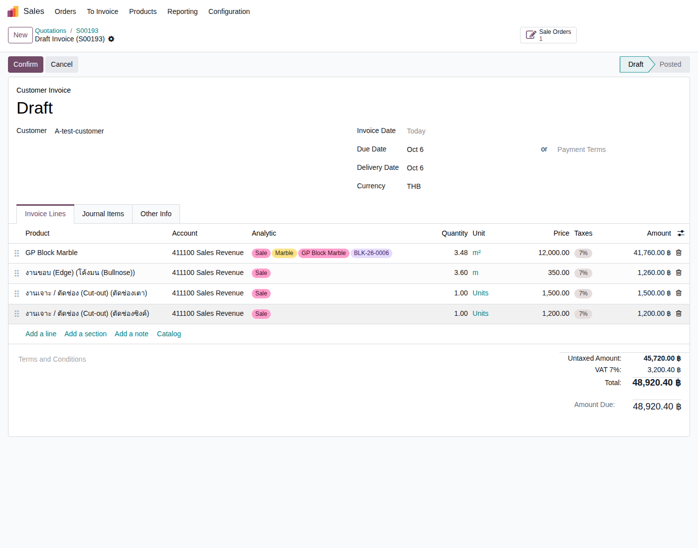 |
| TC-GP-FG-17 | กด Confirm ใบแจ้งหนี้ให้ Posted | ทำ TC-GP-FG-16 เสร็จแล้ว |
|
- | ใบแจ้งหนี้ INV/2026/00011 เป็น Posted · ยอดค้างชำระ 48,920.40 บาท · บัญชีบันทึกรายได้ 45,720.00 + VAT 3,200.40 และต้นทุนขาย (COGS) 1,153.44 เท่ากับต้นทุน FG ที่ตัดออกจากคลัง · บรรทัดหินติดแท็ก Analytic ทำให้รายงานอ้างอิงกลับไปถึง Block ต้นทางได้ | High | 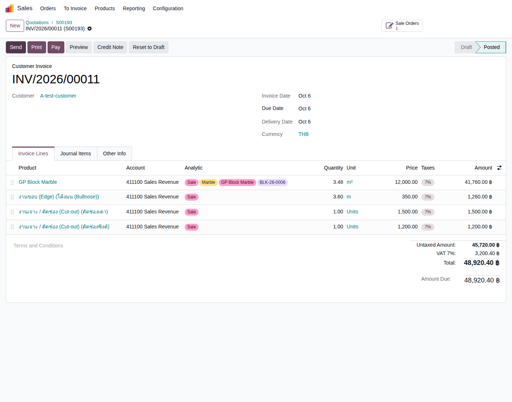 |
| TC-GP-FG-18 | ตรวจต้นทุนรวมของ FG ไม่ต่ำกว่า 50% ของยอดขายหิน ค่าแรงและค่าแปรรูปเป็นอัตรามาตรฐานชั่วคราว (หมวด Countertop ม² ละ 1,500 + วัสดุสิ้นเปลือง 100) ถ้าต้นทุนรวมยังไม่ถึง 50% ของยอดขาย ระบบเติมส่วนต่างเป็นค่าแรง/แปรรูปให้ — ปรับสัดส่วนได้ที่ค่าระบบ stone_slab_inventory.fg_min_cost_ratio · ค่าแรงลงบัญชีตอนผลิตเสร็จ ต้นทุนวัสดุลงตอนส่งของ/ออกใบแจ้งหนี้ |
ทำ TC-GP-FG-11 เสร็จแล้ว |
|
- | รายการบัญชี MISC/2026/10/0003: เดบิต 511120 COGS - FG Production (Fabrication) 19,378.56 / เครดิต 212300 Accrued Expenses 19,378.56 (ค่าวัสดุสิ้นเปลือง 348.00 ลงอีกรายการแยก) · ต้นทุนรวม = วัสดุ 1,153.44 + วัสดุสิ้นเปลือง 348.00 + ค่าแรง 19,378.56 = 20,880.00 = 50% ของยอดขายหิน 41,760.00 พอดี | High | 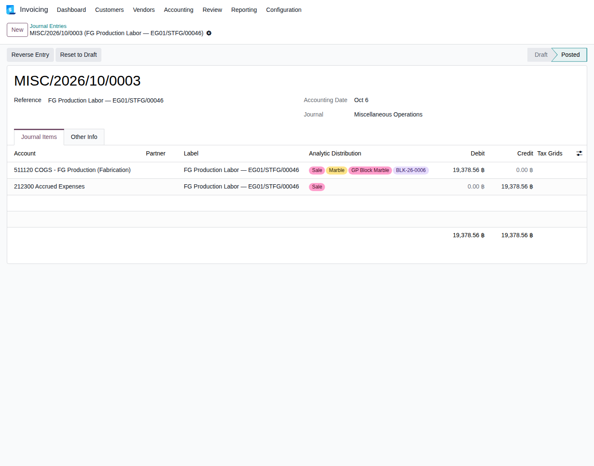 |
B1. ใบสั่งขาย Custom FG (เจดีย์บัว) พร้อมสูตรจาก BOQ
B · เลือกสินค้า Custom FG → โหลด BOQ เป็นสูตรของบรรทัด → ตรวจต้นทุนประมาณ → Confirm · 4 test cases
| TC ID | Scenario | Precondition | Steps | ข้อมูลตัวอย่าง | Expected Result | Priority | ภาพหน้าจอ |
|---|---|---|---|---|---|---|---|
| TC-GP-FG-19 | สร้างใบสั่งขาย แล้วเลือกสินค้า Custom FG จำนวนเป็นชิ้น สินค้า Custom FG (ติ๊ก "เป็น Custom FG" ที่สินค้า) ไม่ผูกกับวัสดุเดียว ราคาตั้งไว้ที่สินค้า (เจดีย์บัว 50,000 ต่อชิ้น) จำนวนในบรรทัดคือ "จำนวนชิ้นสำเร็จรูป" และ Sales แก้ราคาได้ |
มีลูกค้า (A-test-customer) และสินค้า เจดีย์บัว (Custom FG) · มี BOQ ที่เตรียมสูตรไว้แล้ว (BOQ0023: หิน NERO + GP Block Marble พร้อมรายชิ้น, กาว, ซีลแลนท์) |
|
Customer = A-test-customer · Product = เจดีย์บัว · Quantity = 3 | ใบเสนอราคา S00194 มีบรรทัดเจดีย์บัว 3 ชิ้น × 50,000.00 = 150,000.00 ก่อน VAT · มีไอคอน "โหลด BOQ" และ "ดูสูตร" บนบรรทัด | High | |
| TC-GP-FG-20 | โหลด BOQ เป็นสูตรของบรรทัดนี้ | ทำ TC-GP-FG-19 เสร็จแล้ว |
|
BOQ = BOQ0023 | ระบบคัดลอกบรรทัดหิน (พร้อมรายชิ้น) และวัสดุสิ้นเปลือง จาก BOQ เข้ามาเป็นสูตรของบรรทัดนี้ (ปริมาณต่อชิ้นงาน 1 หน่วย) — แก้ BOQ ภายหลังไม่กระทบสูตรที่โหลดแล้ว · บรรทัดใบสั่งขายแสดงคอลัมน์ ต้นทุน/ชิ้น (ประมาณ) และ Margin/ชิ้น (ประมาณ) | High | 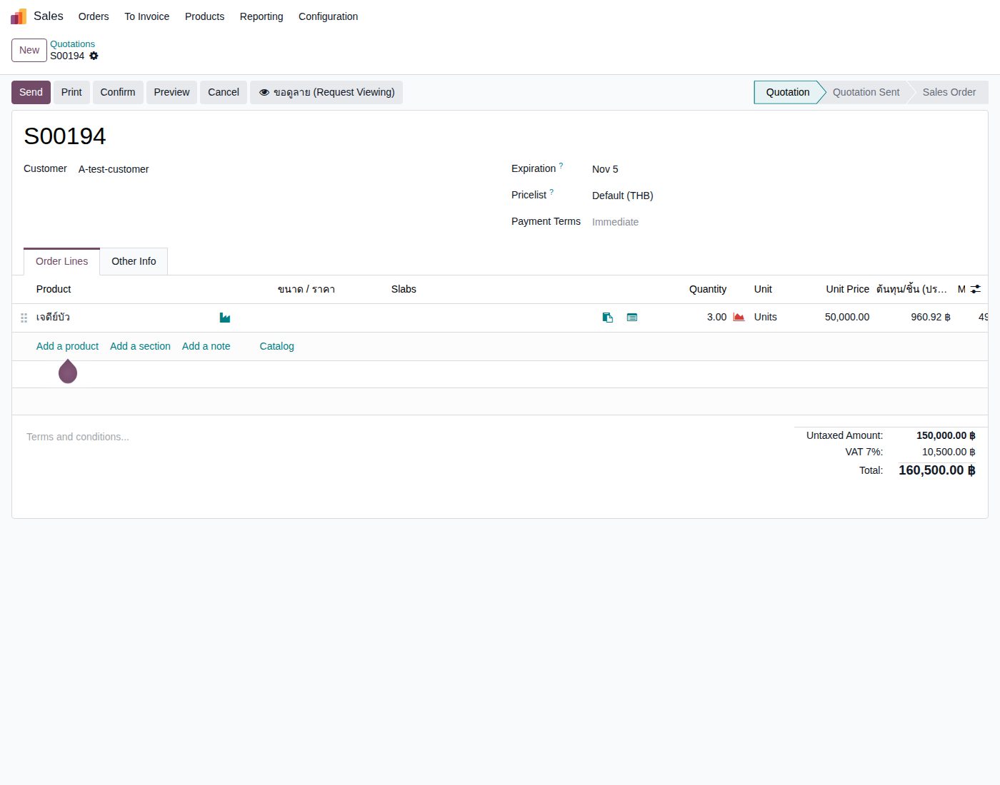 |
| TC-GP-FG-21 | ตรวจสูตรและต้นทุนประมาณต่อชิ้น ต้นทุนในหน้านี้เป็น "ประมาณ" คำนวณจากราคา Rate ใน BOQ × ปริมาณ (รวมเผื่อเสีย) ไม่ใช่ต้นทุนจริงของ Slab — ต้นทุนจริงจะเห็นที่ Serial หลังผลิต (TC-GP-FG-30) |
ทำ TC-GP-FG-20 เสร็จแล้ว |
|
- | ตารางสูตร 4 แถว: NERO RUSTENBURG 0.36 ม² (เผื่อเสีย 10%) = 637.96 · GP Block Marble 0.54 ม² (เผื่อเสีย 10%) = 192.46 · กาว/epoxy 0.90 ม² = 108.00 · ซีลแลนท์ 0.90 ม² = 22.50 · รวมต้นทุนประมาณ 960.92 บาทต่อชิ้น · รายชิ้นของแต่ละหิน (GP-01, GP-02, GP-03) แสดงในคอลัมน์ขวา | High | 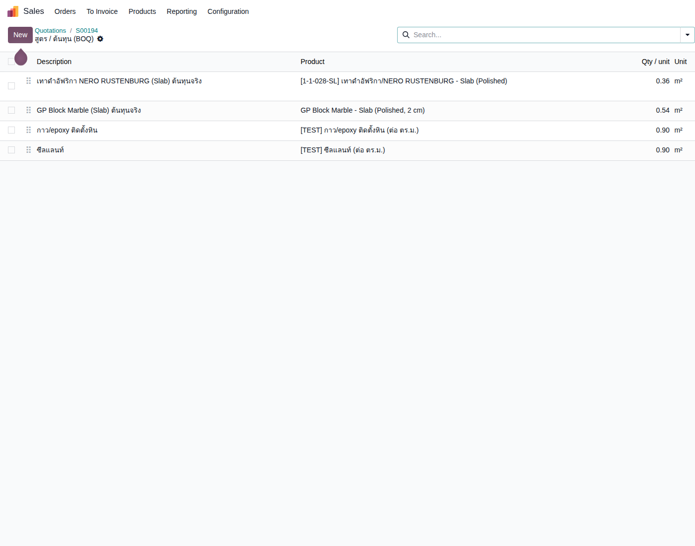 |
| TC-GP-FG-22 | กด Confirm — ระบบสร้างใบสั่งผลิตให้ครบ Confirm ผ่านเสมอแม้หินในสต็อกไม่พอ (ใบสั่งผลิตจะค้างเป็นฉบับร่างพร้อมเตือน) · ถ้าบรรทัด Custom FG ไม่มีสูตร ระบบไม่ให้ Confirm |
ทำ TC-GP-FG-21 เสร็จแล้ว |
|
- | ใบเสนอราคาเป็น Sales Order · ระบบสร้างใบสั่งผลิตฉบับร่าง 3 ใบ: งานประกอบ EG01/STFG/00047 (เจดีย์บัว 3 ชิ้น) + ใบตัดหิน NERO EG01/STCPL/00011 (6 ชิ้น) + ใบตัดหิน GP Block Marble EG01/STCPL/00012 (3 ชิ้น) — จำนวนชิ้นตัด = ชิ้นต่อ 1 หน่วย × 3 หน่วย (เช่น "GP-01 #2") | High | 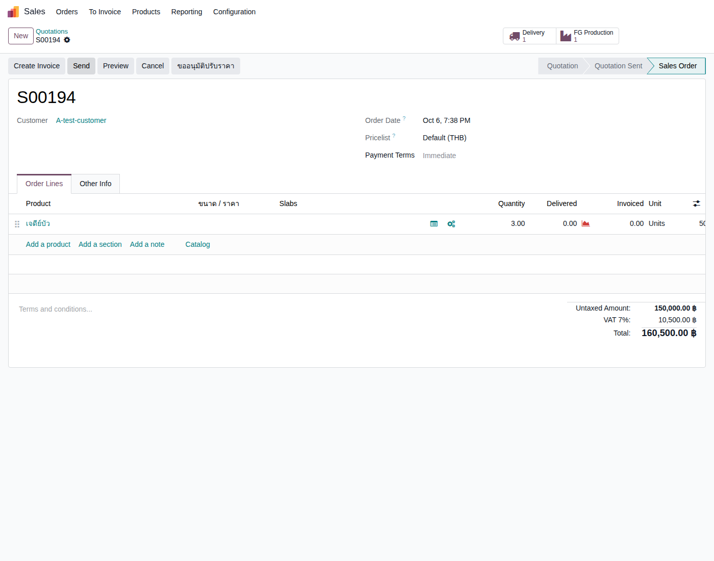 |
B2. ตัดหินและประกอบ Custom FG
B · ใบตัดหินแต่ละชนิด (ย้ายด่วน → Confirm → ขนาดจริง → Complete) → งานประกอบ → Serial 1 ตัวต่อชิ้น · 6 test cases
| TC ID | Scenario | Precondition | Steps | ข้อมูลตัวอย่าง | Expected Result | Priority | ภาพหน้าจอ |
|---|---|---|---|---|---|---|---|
| TC-GP-FG-23 | เปิดใบตัดหินของหินชนิดแรก (NERO RUSTENBURG) ตอนยังเป็น Draft แท็บ Components แสดงจำนวน 6 ตามสูตร แต่หลัง Confirm ระบบใช้ Slab จริง 1 แผ่นต่อชนิดหิน (มีกล่องข้อความอธิบายบนหน้า) · ต้อง Confirm ก่อนจึงกด Complete ได้ |
ทำ TC-GP-FG-22 เสร็จแล้ว |
|
- | ใบตัดหิน Draft · ผลผลิต "เทาดำอัฟริกา/NERO RUSTENBURG - Cutting Plan WIP" 6 ชิ้น · ผูกกับงานประกอบ EG01/STFG/00047 (For Assembly) · มีข้อความนำทางให้กด "ย้ายด่วน" ก่อน Confirm | High | 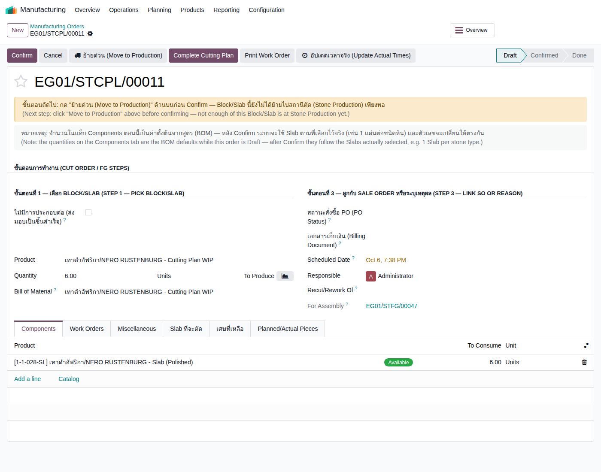 |
| TC-GP-FG-24 | ย้ายหินเข้าไลน์ผลิตและ Confirm ใบตัดหิน | ทำ TC-GP-FG-23 เสร็จแล้ว |
|
- | ใบตัดหินเป็น Confirmed · แท็บ Components แสดงแผ่น NERO ที่ใช้ 1.00 แผ่น (Available) · ข้อความนำทางบอกให้กรอกขนาดจริงในแท็บ Planned/Actual Pieces แล้วกด Complete Cutting Plan | High | 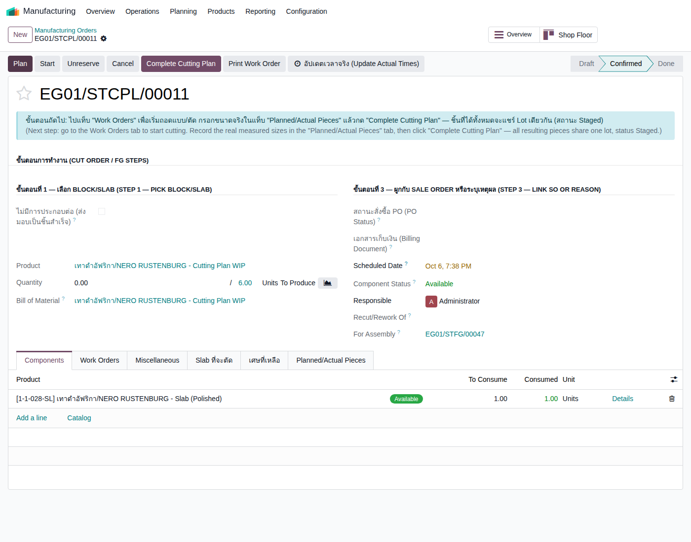 |
| TC-GP-FG-25 | กรอกขนาดชิ้นที่ตัดได้จริงและกด Complete Cutting Plan (NERO) | ทำ TC-GP-FG-24 เสร็จแล้ว |
|
ตัดได้ตรงแบบ: 0.30 × 0.60 ม. หนา 0.02 ม. ทั้ง 6 ชิ้น | ใบตัดหินขึ้น Done · ได้ WIP Lot CUT-EG01/STCPL/00011 รวม 6 ชิ้น มูลค่า 2,899.80 บาท (ต้นทุน Slab แผ่นที่ใช้) อยู่ที่ Stone Production | High | 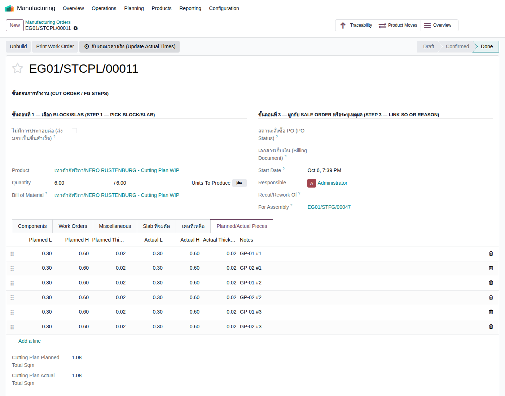 |
| TC-GP-FG-26 | ตัดหินชนิดที่สอง (GP Block Marble) ให้เสร็จเช่นเดียวกัน | ทำ TC-GP-FG-25 เสร็จแล้ว |
|
ตัดได้ตรงแบบ: 0.60 × 0.90 ม. หนา 0.02 ม. 3 ชิ้น | ใบตัดหินขึ้น Done · ได้ WIP Lot CUT-EG01/STCPL/00012 รวม 3 ชิ้น มูลค่า 1,215.00 บาท (ต้นทุน Slab 1 แผ่น) | High | 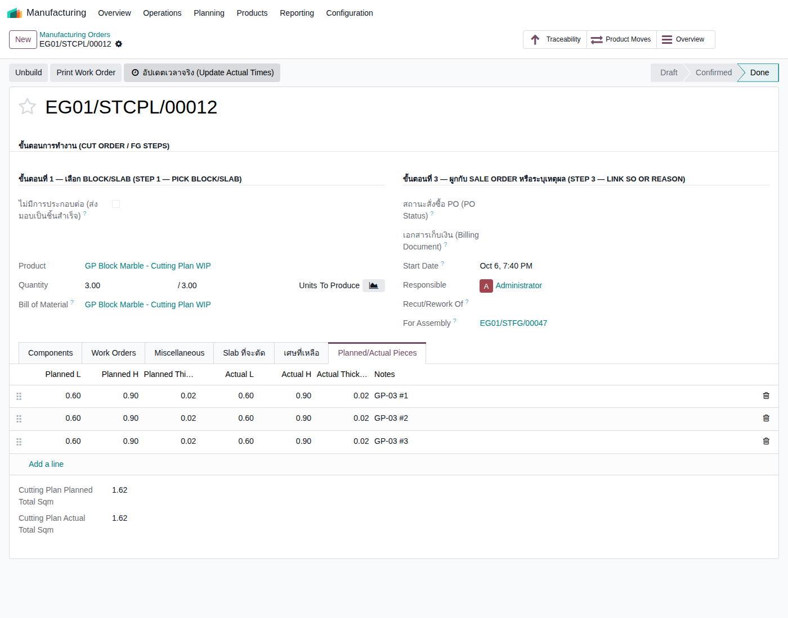 |
| TC-GP-FG-27 | Confirm งานประกอบ — ระบบดึง WIP และวัสดุสิ้นเปลือง งานประกอบ Confirm ไม่ได้จนกว่าใบตัดหินที่ผูกกันทุกใบจะ Done · กาวและซีลแลนท์ต้องมีสต็อกที่ Stone Production (ในชุดทดสอบรับเข้าไว้ 100 หน่วยต่อรายการ) ถ้าไม่มีสต็อก ต้นทุนวัสดุส่วนนี้จะไม่เข้า Serial |
ทำ TC-GP-FG-26 เสร็จแล้ว |
|
- | งานประกอบเป็น Confirmed · ช่อง Cutting Plan Lots (Stage 2) แสดง CUT-EG01/STCPL/00011 และ 00012 · แท็บ Components: WIP NERO 6, WIP GP 3, กาว 2.70 ม², ซีลแลนท์ 2.70 ม² (0.90 × 3 ชิ้น) พร้อมใช้ | High | 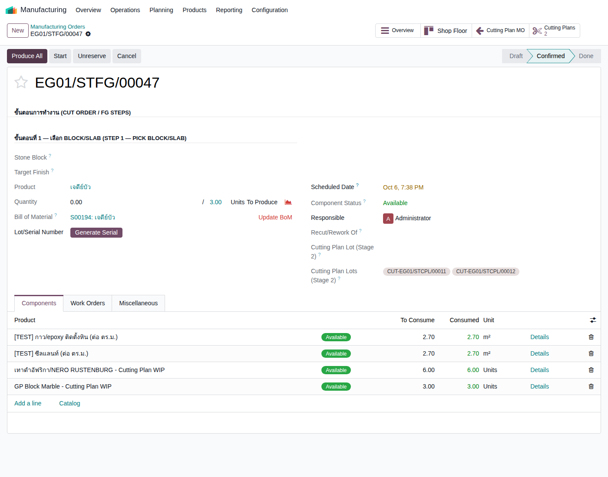 |
| TC-GP-FG-28 | กด Produce All — ได้ Serial 1 ตัวต่อชิ้น | ทำ TC-GP-FG-27 เสร็จแล้ว |
|
- | งานประกอบขึ้น Done · Quantity 3.00 / 3.00 · ได้ Serial Numbers 3 ตัว (CB-00013, CB-00014, CB-00015) อยู่ที่ EG01/Stock/Stone FG · วัสดุทุกรายการถูกใช้ครบ (Consumed 6 / 3 / 2.70 / 2.70) · ต้นทุนแต่ละ Serial 1,502.10 บาท (= WIP 4,114.80 + วัสดุสิ้นเปลือง 391.50 หาร 3) · ปุ่ม Serial Numbers / Traceability ย้อนดูได้ถึง Slab ต้นทาง | High | 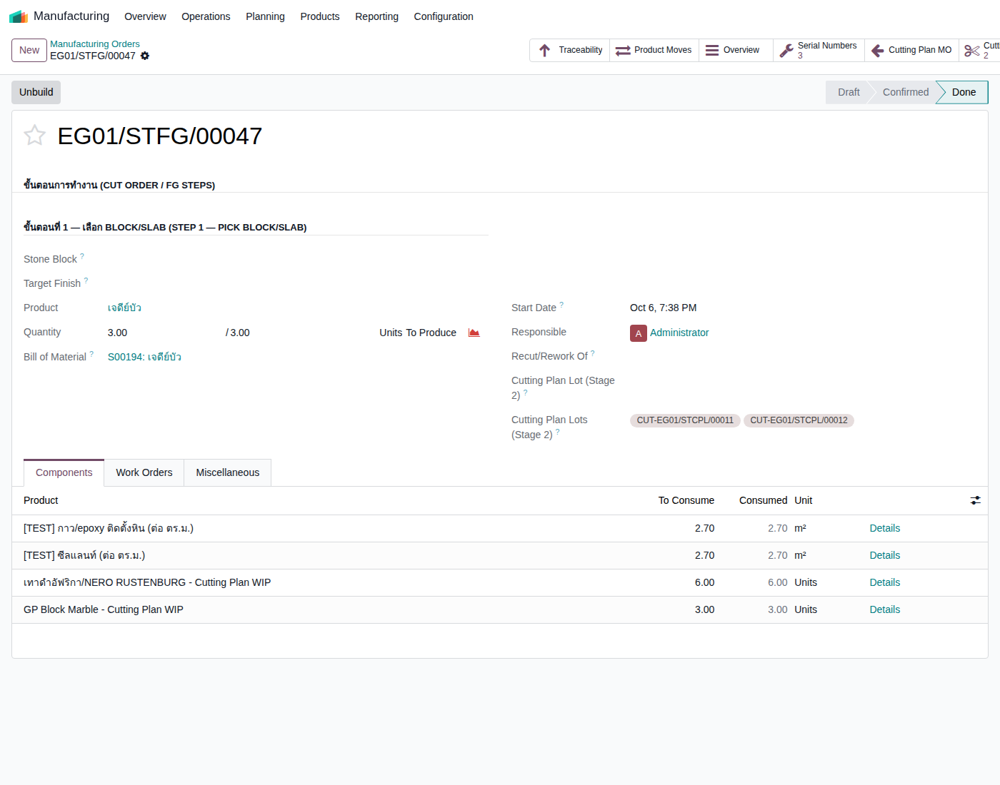 |
B3. ส่งของ เก็บเงิน และตรวจต้นทุน Custom FG
B · ใบส่งของจองเฉพาะ Serial ของใบขายนี้ → Validate → ใบแจ้งหนี้ → ตรวจต้นทุน · 4 test cases
| TC ID | Scenario | Precondition | Steps | ข้อมูลตัวอย่าง | Expected Result | Priority | ภาพหน้าจอ |
|---|---|---|---|---|---|---|---|
| TC-GP-FG-29 | เปิดใบส่งของ ตรวจว่าระบบจอง Serial ของงานนี้ให้เอง Serial ที่ผลิตให้ใบขายใบไหนจะถูกผูกกับใบส่งของของใบขายนั้น — ใบส่งของของใบขายอื่นที่ค้างอยู่จะไม่หยิบไป |
ทำ TC-GP-FG-28 เสร็จแล้ว |
|
- | ใบส่งของ EG01/OUT/00077 พร้อมส่ง (Ready) · Detailed Operations ระบุ Serial ครบ 3 แถวจากโซน EG01/Stock/Stone FG: CB-00013, CB-00014, CB-00015 (ชิ้นละ 1) — ไม่ต้องสแกนหรือเลือกเอง | High | 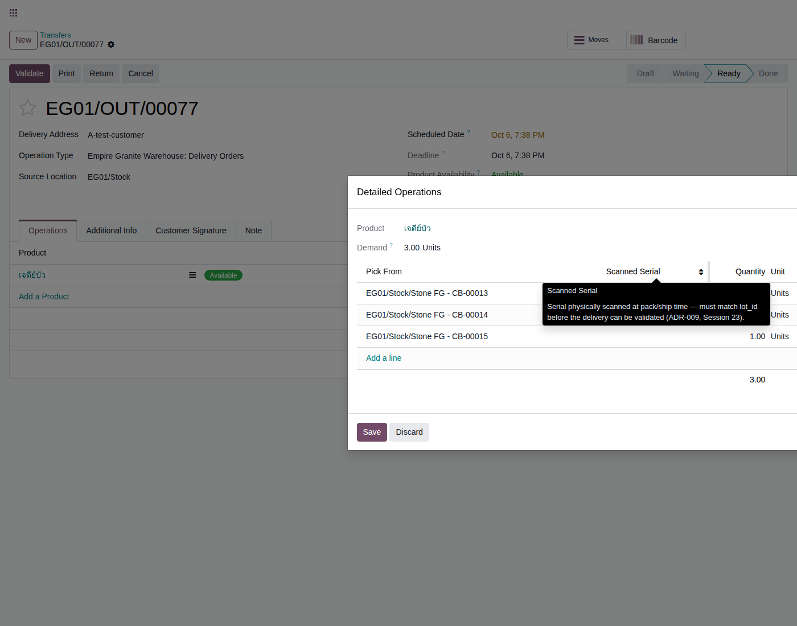 |
| TC-GP-FG-30 | กด Validate ส่งของ | ทำ TC-GP-FG-29 เสร็จแล้ว |
|
- | ใบส่งของขึ้น Done · Quantity 3.00 จาก Demand 3.00 · Serial ทั้ง 3 ตัวออกจากโซน Stone FG ไปที่ลูกค้า | High | 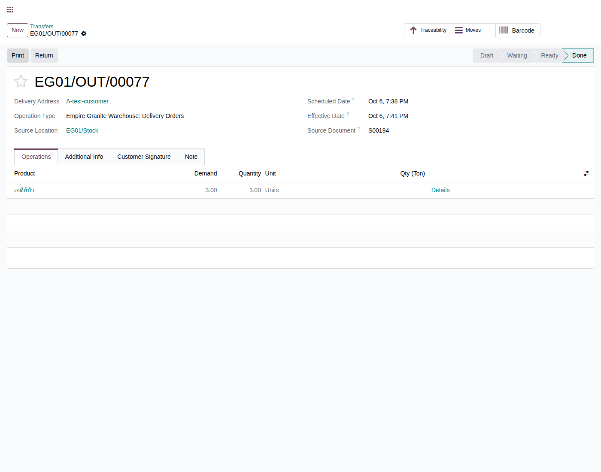 |
| TC-GP-FG-31 | ออกใบแจ้งหนี้และ Post | ทำ TC-GP-FG-30 เสร็จแล้ว |
|
Regular invoice | ใบแจ้งหนี้ INV/2026/00012 เป็น Posted · เจดีย์บัว 3 ชิ้น × 50,000.00 = 150,000.00 + VAT 10,500.00 = 160,500.00 บาท · บัญชีบันทึกรายได้ 150,000.00 และต้นทุนขาย 4,506.30 = ต้นทุน Serial 3 ตัวที่ตัดออกจากคลัง FG | High | 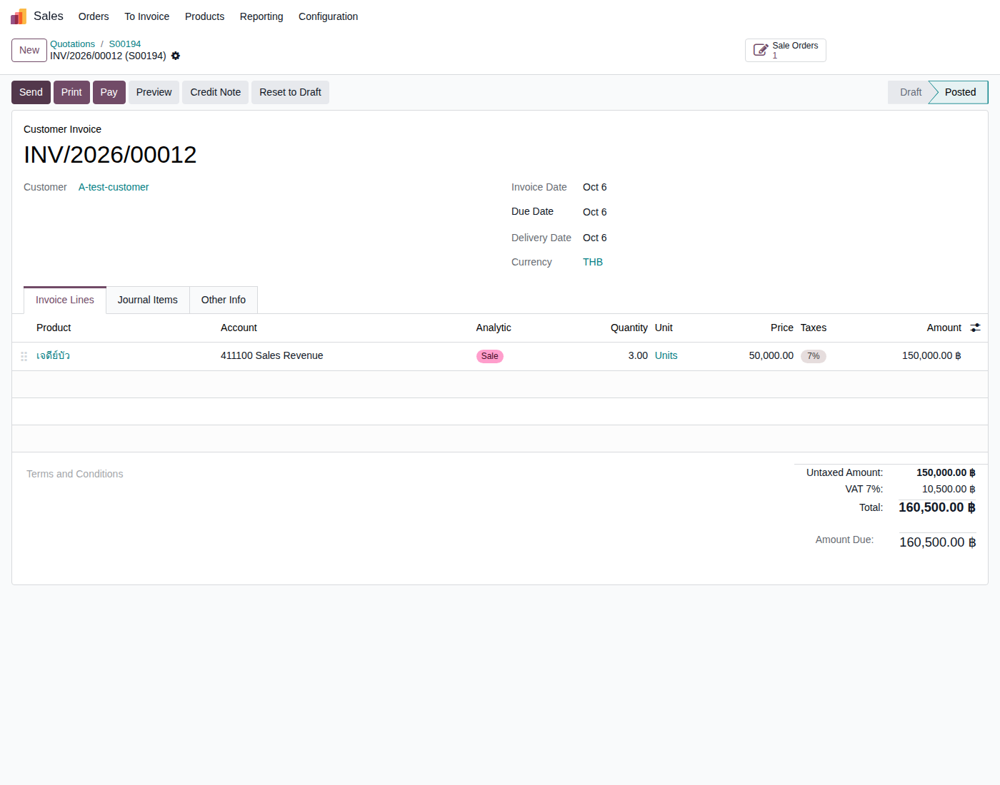 |
| TC-GP-FG-32 | ตรวจต้นทุนรวมของ Custom FG ไม่ต่ำกว่า 50% ของยอดขาย ค่าแรงงานแกะสลัก/ประกอบเป็นอัตรามาตรฐานชั่วคราว (หมวด Custom ชิ้นละ 10,000) ระบบเติมส่วนต่างให้ต้นทุนรวมถึง 50% ของยอดขาย — เป็นตัวเลขตั้งต้นเพื่อใช้ทดสอบ ต้องปรับเป็นค่าแรงจริงของโรงงานก่อนใช้งานจริง · งานแปรรูปแบบบริการ (บรรทัดบริการในใบขาย) ยังไม่มีต้นทุนของตัวเอง |
ทำ TC-GP-FG-28 เสร็จแล้ว |
|
- | รายการบัญชี MISC/2026/10/0005: เดบิต 511120 COGS - FG Production (Fabrication) 70,493.70 / เครดิต 212300 Accrued Expenses 70,493.70 · ต้นทุนรวม = วัสดุ+วัสดุสิ้นเปลือง 4,506.30 + ค่าแรง 70,493.70 = 75,000.00 = 50% ของยอดขาย 150,000.00 พอดี | High | 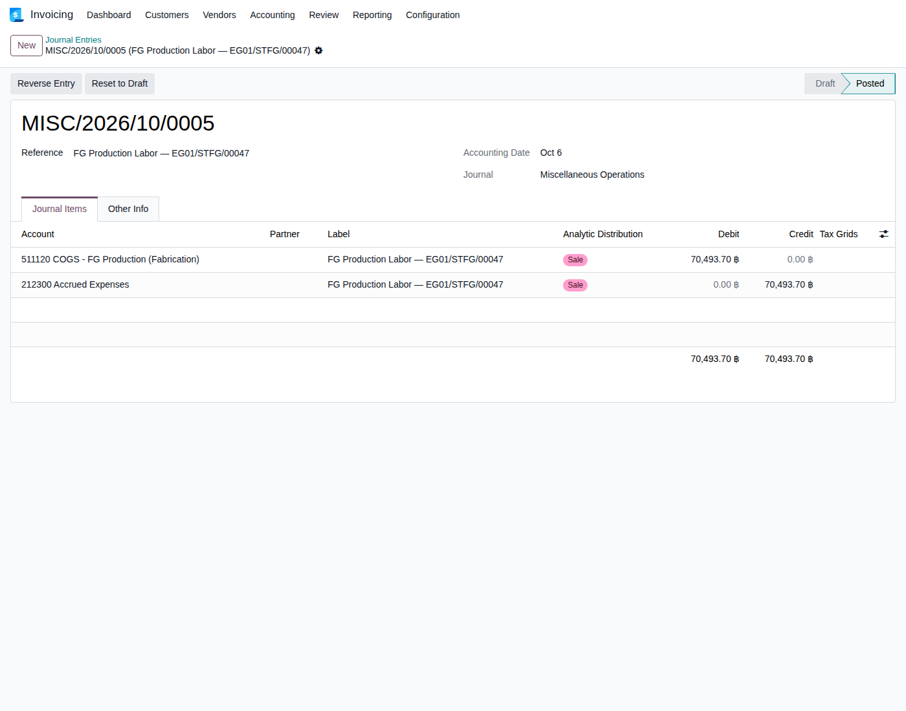 |